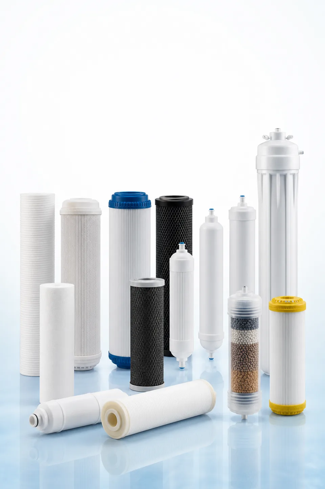

Filter cartridge sourcing guide
Water Filter Cartridge Catalog
Compare cartridge families, selection criteria and private-label options for purifier, dispenser and replacement-filter programs.
Get the Filter Cartridge Catalog✓ 50-page English OEM catalog✓ Private-label and OEM options✓ Selection and specification guide✓ No public pricing

PP · GAC · CTO · T33 · RO · UF
Included product families
The catalog is organized around technical selection, compatible formats and quotation inputs, without unsupported health or certification claims.
PP sediment
GAC / UDF
CTO carbon block
T33 inline
RO membrane
UF membrane
Resin / specialty media
Yuchen Water
Tell us where to send your catalog
Complete the business contact form to download the private 50-page English OEM PDF immediately.
50-page English OEM catalog
Private-label and OEM options
Selection and specification guide